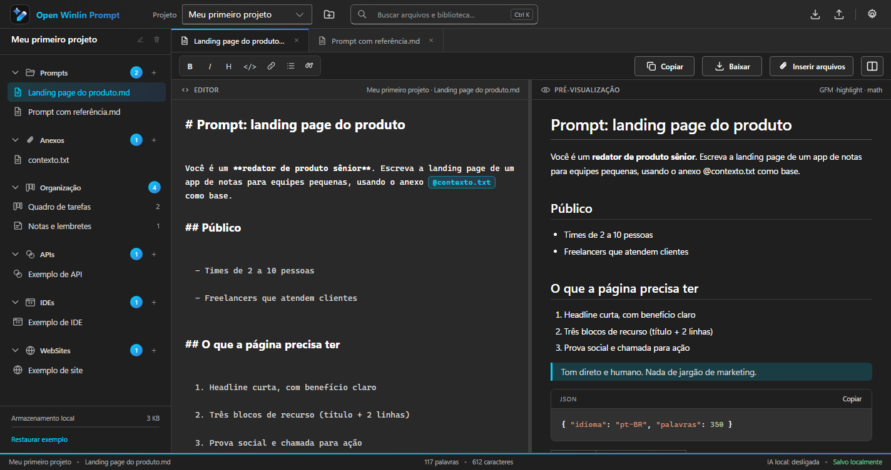
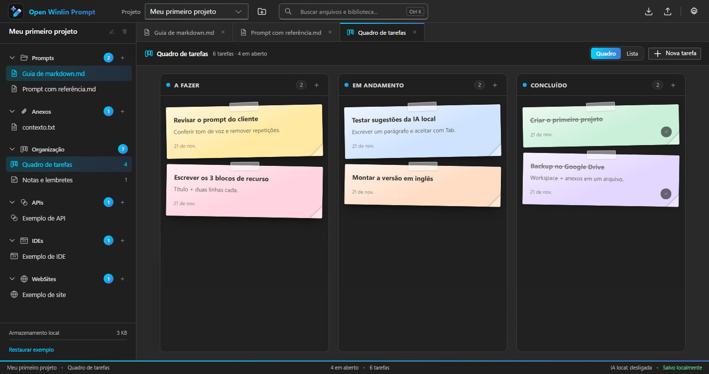
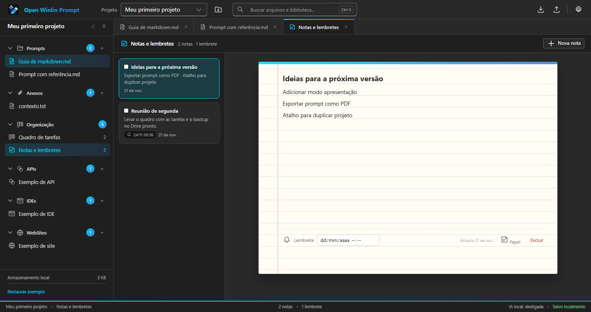

Formatação que aparece no editor
Negrito, títulos, listas, citações e código ganham destaque no próprio texto — sem perder o Markdown cru. Os botões alternam em vez de empilhar asteriscos, e o Ctrl+Z funciona de verdade.
Um estúdio de prompts em Markdown com pré-visualização instantânea, biblioteca de APIs, IDEs e sites, quadro de tarefas, notas com lembretes e sugestões de texto de uma IA que roda offline no seu PC.

Editor, biblioteca, organização e IA local — sem abrir dez abas e sem copiar e colar entre ferramentas.
Negrito, títulos, listas, citações e código ganham destaque no próprio texto — sem perder o Markdown cru. Os botões alternam em vez de empilhar asteriscos, e o Ctrl+Z funciona de verdade.
Tabelas alinhadas, blocos de código com realce e KaTeX para fórmulas. Dá para esconder a pré-visualização e escrever em tela cheia.
Guarde provedor, URLs, modelos e a chave de cada API. A chave fica fora do prompt na hora de inserir — nada de token vazando em print.
Imagem, PDF, áudio, vídeo e texto até 50 MB. O conteúdo fica no IndexedDB do navegador e abre em aba própria, sem modal.
Seis cores, arraste entre colunas, edite no clique e alterne para a lista. Cada projeto tem o próprio quadro, salvo junto com os prompts.
Folhas com linhas e margem, título, corpo e lembrete com data e hora. O que venceu aparece em vermelho na lista lateral.
Texto fantasma no cursor, Tab aceita e Esc ignora. O modelo é aquecido no boot, o contexto fica em cache e a sugestão nunca entra no texto salvo por acidente. Selecione um trecho para Reduzir, Aumentar ou Corrigir gramática.
Um arquivo open-winlin-prompt-backup.json no seu Google Drive com workspace e anexos. Ou baixe o .json e restaure em outro PC.
As mesmas telas do app: editor + prévia, quadro de tarefas e notas. Tema claro e escuro com a mesma cor de destaque.


Sem chave de API, sem plano, sem prompt saindo para servidor nenhum. O modelo conversa com o app por localhost.
Um modelo leve (~986 MB) que roda em CPU. Bom para completar frases, listas e blocos de código sem esquentar o notebook.
O modelo é carregado no início e o contexto recente fica em cache: a primeira sugestão caiu de ~3,3 s para ~0,6–1,5 s no mesmo PC.
Temperatura baixa, seed fixa, limite de linhas e limpeza de repetições. Nada de sugestão que repete a linha que você acabou de escrever.
Ollama é opcional. O app funciona 100% sem IA. Se quiser as sugestões, o instalador detecta o Ollama, oferece a instalação, baixa o modelo e configura o acesso automaticamente.
Projetos, anexos, quadro e notas vivem no armazenamento do navegador (localStorage e IndexedDB) na sua máquina.
Nenhum analytics, nenhum cookie de marketing, nenhum cadastro. O site é estático e o app não manda telemetria.
O backup no Google Drive é opcional, usa o escopo drive.file e o token de acesso fica apenas na memória.
O instalador traz o app embutido (não baixa nem compila nada), instala na sua pasta de usuário e não pede administrador.
Instala em %LOCALAPPDATA%\Programs\open-winlin-prompt, cria o atalho e abre o app em
http://localhost:43210. Instalação silenciosa: open-winlin-prompt-setup.exe --silent.
O executável não é assinado digitalmente. Se o Windows mostrar aviso, use Mais informações → Executar assim mesmo.
No seu computador: o workspace fica no localStorage e os anexos no IndexedDB do navegador que abre o app. Nada é enviado para servidores do desenvolvedor — só existe internet se você usar o backup no Google Drive ou a verificação de atualizações.
Não. O app abre e funciona offline. A conta do Google é pedida apenas se você clicar em “Salvar no Google Drive”.
Não. Todas as sugestões podem ser desligadas. Quando ligadas, usam o Ollama em localhost:11434 com o modelo Qwen 2.5 Coder 1.5B, baixado uma vez e executado na sua máquina.
Configurações → Backup na nuvem. Salve no Google Drive ou baixe um .json e restaure na outra máquina. O arquivo inclui prompts, biblioteca, anexos, quadro e notas.
O login do Google só aceita origens http(s). Um servidor local mínimo (incluído no app) serve a interface nessa porta; ele escuta apenas em 127.0.0.1 e não expõe nada na rede.
Sim, licença MIT. O código está em github.com/PedroNunes0z/open-winlin-prompt e você pode compilar, alterar e redistribuir mantendo o aviso de copyright.
Ainda não. Por isso o SmartScreen pode avisar na primeira execução. O código do instalador também está no repositório para quem preferir ler antes.
Baixe, abra e escreva o primeiro prompt em menos de um minuto. Se gostar, deixe uma estrela no repositório.